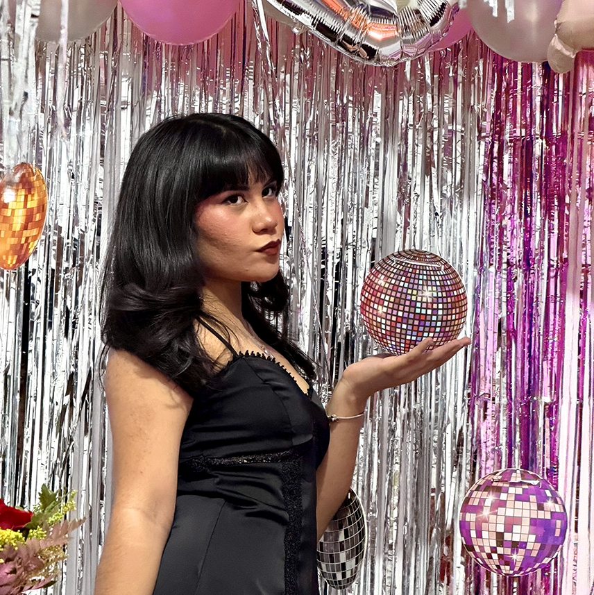
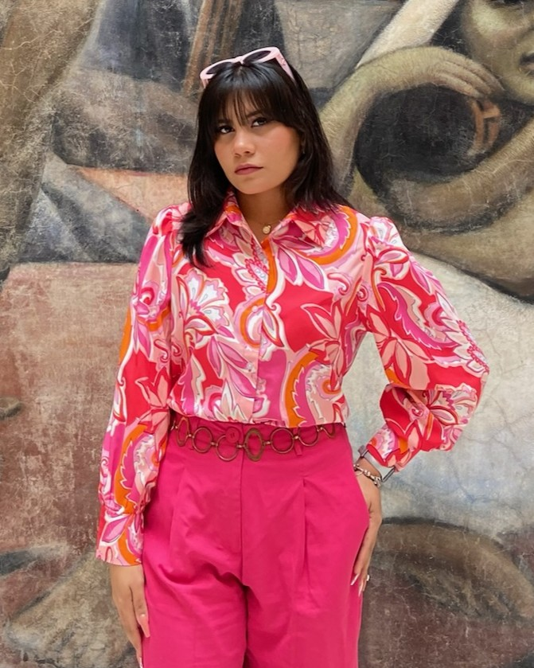

Educación
- 2023 – PresenteLicenciatura en Comunicación Institucional y PeriodismoUniversidad Gerardo Barrios, San Miguel
- 2022 – 2024Curso de inglés avanzadoConstruye tu futuro, San Miguel
Editora y creadora de contenido
Historias en video y foto que hacen que las marcas se vean como son: cercanas y en tendencia.
Ver mi trabajo Escríbeme

Sobre mí
Soy editora y creadora de contenido en San Miguel. Estudio Comunicación Institucional y Periodismo, y me enfoco en publicidad digital y contenido en tendencia: desde la idea y el guion hasta la edición final.
He trabajado con
Estudiante de comunicaciones y periodismo, enfocada en publicidad digital y contenido en tendencia para redes sociales.
Elige lo que necesitas o combínalos: armamos una propuesta a la medida de tu marca.
Videografía
Formato vertical pensado para Reels y TikTok. Elige un video o desliza el teléfono; toca ▶ para verlo completo.
Producto, moda y eventos. Filtra por categoría y toca una foto para ampliarla.
Lo que dicen las marcas con las que he trabajado.
Trabajemos juntos
Cuéntame de tu marca y qué quieres lograr. Te respondo por WhatsApp.